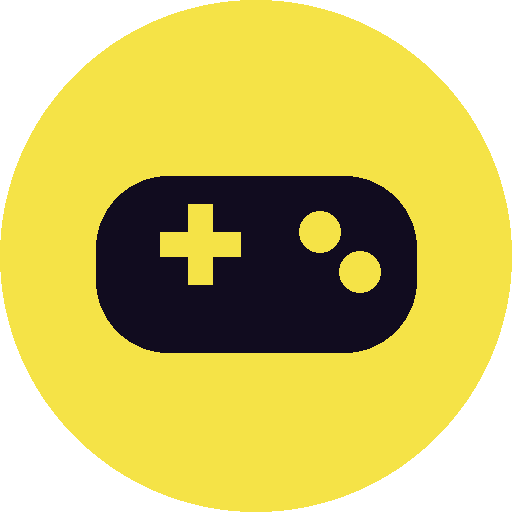

Pick a game, press play, and read the guide under it. All 450 games come with plain steps and tips you can use right away.
Retro-Bowl-2027 is a library of 450 free games that run in a web browser. There is nothing to install and nothing to sign up for. Open a game page, press play, and the game loads in the frame.
The angle here is simple: every game gets clear, practical instructions. Many game sites give you a title and a play button and leave the rest to you. We write a guide for each game so you know what the goal is, which keys to press and what to do in the first minute. Then we add the tips that actually help you score more, last longer or win more often.
Each guide follows the same order, so you always know where to look:
Read the guide once, play a round, then come back to the tips. That loop works better than reading everything up front.
Every game sits in one of four categories. Use them to narrow the grid when you know the kind of game you want.
Fast games that test timing and reflexes: platformers, shooters, fighting games, runners and arena games. Expect quick restarts and short levels. Most action guides focus on movement, enemy patterns and when to attack or wait.
Games where planning beats speed. This covers tower defense, puzzles with a plan behind them, management games, card games and turn-based battles. The guides explain the economy or resource system first, because that is where most early losses come from.
Short, easy-to-learn games for a few spare minutes: match-three, merge games, idle clickers, word games, physics toys and simple arcade challenges. The guides keep it brief and point out the one or two rules that matter most.
Racing, stunt driving, parking, football, basketball, golf and other sports games. These guides cover handling, timing and the scoring rules, which often differ from the real sport.
Browser games are easy to start, but a few habits make them run better and feel fairer.
Yes. Every game on Retro-Bowl-2027 is free to play. The site is paid for by ads shown around the games, so you never need to buy anything to play here.
No. The games run in your browser. A current browser with JavaScript enabled is all you need.
The game frame probably does not have focus. Click once inside the game, then try again. If that fails, reload the page or open the game in a new tab.
Many games work on phones and tablets, but not all of them. Games built for a keyboard or mouse may be hard to control by touch. Check the Controls section of the guide before you start.
The games are made by independent studios and developers, and they belong to them. Retro-Bowl-2027 writes the guides and organizes the games so they are easy to find and learn.
Type part of its name into the search box at the top of the grid. You can also pick a category to see only action, strategy, casual or driving and sports games.